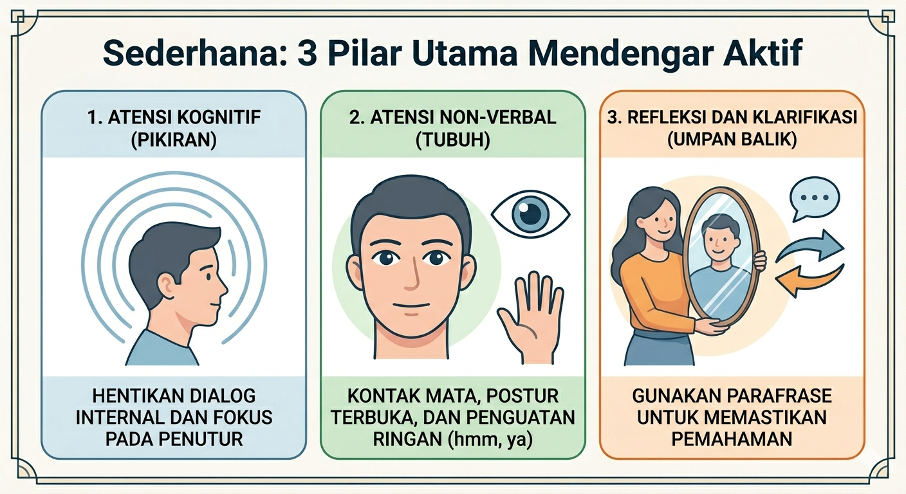

Kekuatan Tak Terlihat dari Mendengar Aktif: Mengubah Koneksi Menjadi Kompetensi
Di era digital yang penuh dengan distraksi, perhatian (attention) telah menjadi komoditas yang paling langka sekaligus paling berharga. Kita hidup di dunia yang sangat menghargai kemampuan berbicara di depan umum, debat, dan persuasi. Namun, kita sering melupakan satu keterampilan dasar yang menjadi fondasi dari semua interaksi manusia yang sukses: Mendengar Aktif (Active Listening).
Mendengar aktif bukan sekadar proses mekanis tertangkapnya suara oleh telinga. Ini adalah sebuah disiplin mental untuk hadir sepenuhnya, memahami konteks, dan memberikan ruang bagi orang lain untuk merasa benar-benar dipahami.
Mengapa Mendengar Aktif adalah "Skill Dewa" yang Tersembunyi?
Banyak orang menganggap mendengar adalah kegiatan pasif. Padahal, secara psikologis, mendengar aktif membutuhkan energi mental yang besar. Berikut adalah alasan mengapa keterampilan ini sangat krusial:
- Membangun Kepercayaan (Trust) Secara Instan: Saat seseorang merasa didengarkan tanpa dihakimi, otak mereka melepaskan oksitosin—hormon yang bertanggung jawab atas rasa aman dan koneksi sosial.
- Efisiensi Kerja yang Tinggi: Sebagian besar kesalahan dalam proyek atau bisnis bermula dari instruksi yang kurang dipahami. Mendengar aktif memangkas waktu revisi karena Anda menangkap esensi tugas sejak awal.
- Resolusi Konflik: Seringkali, konflik tidak membutuhkan solusi teknis, melainkan validasi emosional. Mendengar aktif mampu meredam emosi lawan bicara sebelum argumen memuncak.
Tiga Pilar Utama Mendengar Aktif

Untuk menguasai keterampilan ini, Anda perlu memahami tiga komponen penyusunnya:
- Atensi Kognitif (Pikiran)
Ini adalah kemampuan untuk membungkam "suara dalam kepala" Anda sendiri. Sering kali saat orang lain bicara, kita sudah sibuk menyiapkan jawaban atau mencari celah untuk mendebat. Mendengar aktif menuntut Anda untuk menghentikan dialog internal tersebut dan fokus 100% pada kata-kata yang diucapkan.
- Atensi Non-Verbal (Tubuh)
Lebih dari 60% komunikasi manusia bersifat non-verbal.
Kontak Mata: Menunjukkan minat, namun jangan terlalu intens hingga mengintimidasi.
Postur Terbuka: Hindari menyilangkan tangan di dada. Condongkan sedikit tubuh ke arah pembicara.
Minimal Encouragers: Anggukan kecil atau gumaman "Hmm," "Ya," atau "Lalu?" berfungsi sebagai bahan bakar agar lawan bicara terus merasa didukung untuk bercerita.
- Refleksi dan Klarifikasi (Umpan Balik)
Inilah yang membedakan mendengar biasa dengan mendengar aktif. Anda bertindak seperti cermin. Cobalah teknik parafrase:
> "Jadi, kalau saya tidak salah tangkap, Anda merasa frustrasi bukan karena beban kerjanya, tapi karena kurangnya komunikasi dari tim desain? Apakah itu tepat?"
Teknik ini memastikan Anda dan lawan bicara berada di frekuensi yang sama sebelum melangkah ke solusi.
Tantangan Terbesar: Godaan untuk "Memperbaiki"
Kesalahan umum, terutama bagi para pemimpin atau pasangan, adalah keinginan untuk langsung memberikan solusi (*the fixing reflex*). Sering kali, orang bercerita hanya untuk menjernihkan pikiran mereka sendiri. Saat Anda langsung memotong dengan saran, Anda secara tidak sengaja menutup ruang penemuan diri bagi mereka.
Kesimpulan
Mendengar aktif adalah investasi rendah biaya dengan imbal hasil yang sangat tinggi. Di kantor, ini akan membuat Anda menjadi rekan tim yang dihormati. Di rumah, ini akan mempererat hubungan emosional. Di mana pun Anda berada, kemampuan untuk membuat orang lain merasa "didengar" adalah karisma yang paling otentik.
Latihlah ini dalam percakapan Anda berikutnya. Cobalah untuk tidak bicara sampai lawan bicara Anda benar-benar selesai, berikan jeda tiga detik, baru kemudian tanggapi. Anda akan terkejut melihat betapa banyak informasi dan rasa hormat yang akan Anda dapatkan.